|

Clique aqui
para visitar o
Acervo de colunas

|

|
A Voyager que não decolou, Parte II
Isso foi ao mesmo tempo bom e ruim para o departamento de efeitos visuais. Daria à nave um maior senso de realidade e escala, mas também aumentaria o trabalho com as texturas e sombras. Nesse ponto, a Voyager mantinha quase todos os elementos da versão angular, mas agora as peças da superfície preenchiam mais o casco. Todos os dias, refinava-se diferentes itens. 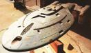 Com o casco mais leve, ficou decidido de uma vez por todas que a Voyager seria uma nave de uma peça só, sem o sistema de separação. Se fosse haver alguma aterrissagem em um planeta, a nave teria que descer inteira sobre o solo. Ela deveria ter o tamanho aproximado do porta-aviões USS Nimitz CVN-68.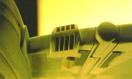 Os motores de impulso, que nas naves de Jornada costumavam ficar atrás do pescoço que ligava as seções disco e engenharia, foram colocados nas asas horizontais que seguravam as naceles de dobra.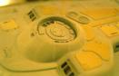 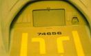
No mês de julho, a questão do formato das naceles e do movimento das asas finalmente foi resolvida. Sternbach criou um modelo simples do formato da Voyager no computador, no qual variava o ângulo das asas (para cima, horizontal, para baixo ) e a posição da nacele em uma série de projeções "fly-by". Os produtores aprovaram o ângulo de 45°para cima. 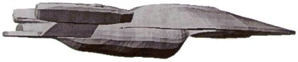 Antes mesmo de as plantas finais serem concluídas, o departamento de efeitos visuais optou por uma miniatura de 1,80m de comprimento, e todos os desenhos foram feitos em tamanho real. Isso significa que Sternbach teve que se deitar sobre a mesa de rascunhos, medindo as partes sob três ângulos diferentes. A Brazil Fabrication, empresa de Tony Meininger, foi escolhida para construir o modelo da Voyager. Eles receberam todos os desenhos e rabiscos em perspectiva. Sternbach detalhou a maior parte dos elementos estruturais, e os sistemas da nave foram organizados em um outro grupo de rascunhos. Nestes, todos os aspectos principais foram nomeados, com sua função, cores (especificadas usando o sistema Pantone), ou se a iluminação era necessária. 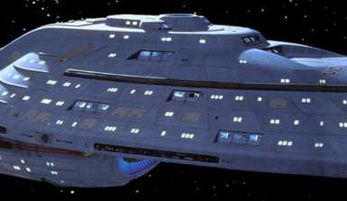 Meininger e sua equipe conseguiram construir as formas em 3D das folhas de Sternbach, e produzir as partes esculturais mais importantes, de última geração. Delas, cascos de plástico foram extraídos, equilibrados, detalhados e prensados em moldes de borracha para fazer os componentes finais em resina dura. O produtor de efeitos Dan Curry pediu que minúsculos quadros dos cenários, iluminados por trás, fossem posicionados nas janelas, para dar a idéia de salas vistas através do vidro -- ou melhor, alumínio transparente. 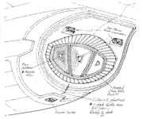 As cores foram especificadas e checadas com o departamento de efeitos visuais para confirmar aos construtores de que, num todo, a Voyager seria uma nave da Frota com uma cor azul-acinzentada identificável, adicionada a outras cores estabelecidas. O sistema Pantone, no qual Jornada às vezes se baseia, é um conjunto de cores de tintas usado por construtores de miniaturas para retratar com fidelidade os tons usados em aeronaves, navios e veículos militares. Havia especificações para as faixas de feisers, RCS, escotilhas dos botes salva-vidas e todos os equipamentos visíveis, geralmente em cores quentes para contraste. As estruturas de sensores foram pintadas em azul metálico e prata. Como em todas as naves anteriores, as luzes de formação eram vermelhas, verdes e brancas. Michael Okuda trabalhou nas dezenas de inscrições do casco, incluindo o nome da nave e registro. 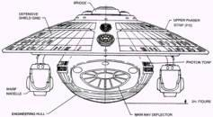 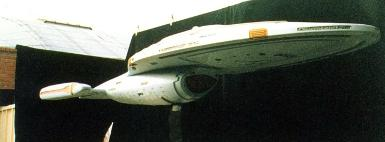 A nave foi para o trabalho. Ela foi medida e escaneada para digitalização em 3D, para a criação de um modelo CGI. Com o tempo,a própria miniatura original foi substituída por aquela recriada em computador 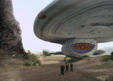
Guardar e articular um conjunto de pernas e pés em um espaço de 3,90m foi um desafio: tudo tinha que se dobrar, ficar bonito, e agüentar uma fração das 750.000 toneladas métricas da Voyager. Os rascunhos iniciais de Sternbach mostravam pernas com um só pé, mas eventualmente "dedos" foram adicionados para distribuir a pressão. Um acesso dos tubos Jefferies ao solo também foi colocado, com degraus e corrimões. Não foi possível construir a estrutura em tamanho real para filmar, então pés em miniatura foram fabricados para cenas estáticas, enquanto a seqüência de pouso foi capturada em animação computadorizada. 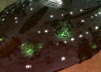 O trabalho nunca parou. Com o passar dos episódios e temporadas, novos elementos apareceram. A Voyager foi assimilada pelos Borgs, atacada por naves que se prendiam a seu casco, foi seriamente avariada, destruída, enfim, passou por muita coisa. No final, o trabalho artesanal e meticuloso dos maqueteiros ficou armazenado nos armários do estúdio, já que as filmagens ficaram mais fáceis -- e mais baratas -- com o avanço nas animações CGI.Esta
coluna foi baseada nos artigos “DESIGNING THE USS VOYAGER”
(STAR TREK: THE MAGAZINE – edições 19 e 20, NOV e DEZ 2000)
e "DESIGNING
STAR TREK: VOYAGER" (STAR TREK: THE MAGAZINE – edição 28,
JUL 2001). O material foi cedido pelo Federation
Starship Datalink Daniel
Sasaki é co-editor do Trek
Brasilis |
 Depois
de mais algum tempo de trabalho, a primeira versão clara da
Voyager curva saiu no dia 16 de junho de 1994. Sternbach continuou
experimentando diferentes variações nas naceles e pilares de
sustentação. Surgiram novas oportunidades de mexer com a leveza
do casco e com as peças de hardware que seriam colocadas nele.
Depois
de mais algum tempo de trabalho, a primeira versão clara da
Voyager curva saiu no dia 16 de junho de 1994. Sternbach continuou
experimentando diferentes variações nas naceles e pilares de
sustentação. Surgiram novas oportunidades de mexer com a leveza
do casco e com as peças de hardware que seriam colocadas nele.